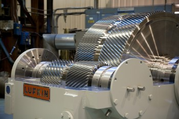
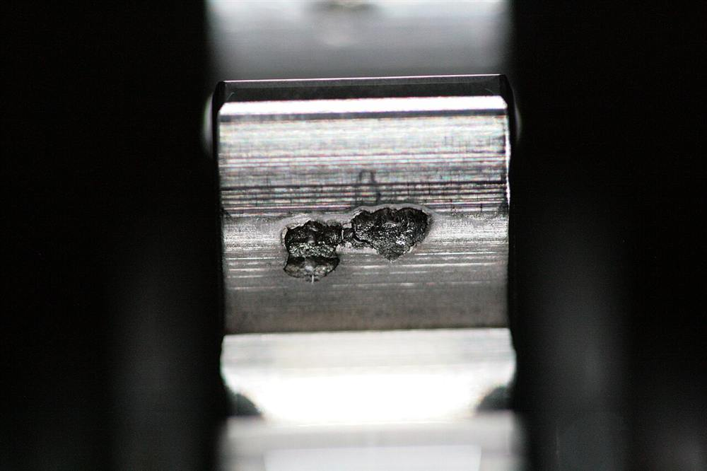

Vos réducteurs et multiplicateurs,
entretenus par ceux qui les conçoivent.
Assistance sur site, expertise, réparation, pièces de rechange et modernisation pour les réducteurs Lufkin Gears et Allen Gears, et les transmissions d’autres constructeurs.
Un interlocuteur pour toute la vie de votre réducteur
De la mise en service au remplacement du train d’engrenages, nos techniciens interviennent sur site ou en atelier, avec un rapport détaillé à chaque intervention.
Intervention sur site
Montage, alignement, mise en service, dépannage et révision sur votre installation.
En savoir plus →Expertise et diagnostic
Portée de denture, relevés de jeux, analyse vibratoire et analyse d’huile.
En savoir plus →Réparation et révision
Remise en état en atelier, remplacement de roulements, paliers et dentures.
En savoir plus →Pièces de rechange
Pignons, roues, roulements, coussinets, joints et accouplements.
En savoir plus →
Réducteurs à arbres parallèles, multiplicateurs haute vitesse, réducteurs marins
Nous intervenons sur les transmissions qui font tourner les turbines, compresseurs, pompes, broyeurs, laminoirs et lignes d’arbres de propulsion.
- Techniciens formés aux méthodes du constructeur
- Interventions programmées ou en urgence sur machine à l’arrêt
- Pièces d’origine et traçabilité des pièces remplacées
- Rapport d’intervention complet remis au client
De votre demande au rapport d’intervention
Votre demande
Décrivez votre besoin et votre matériel dans le formulaire de demande de devis.
Diagnostic et devis
Un responsable qualifie la demande, vous propose une solution et un devis.
Intervention
Un technicien est planifié sur site ou la machine est prise en charge en atelier.
Rapport et suivi
Vous recevez le rapport, et l’historique de votre machine est tenu à jour.

Le même rapport structuré, à chaque intervention
Photos, mesures, pièces remplacées et recommandations sont saisies sur site, sur tablette, y compris à la voix. Le rapport suit toujours la même trame :
- Identification du matériel
- Position du matériel
- But de l’intervention
- Aspect extérieur
- Constat au démontage
- Expertise / contrôle
- Pièces remplacées
- Constat au remontage
- Essais
- Conclusions
- Recommandations
- Déroulement de l’intervention
- Annexes
Machine à l’arrêt ?
Indiquez « Machine arrêtée » dans votre demande : elle est traitée en priorité.